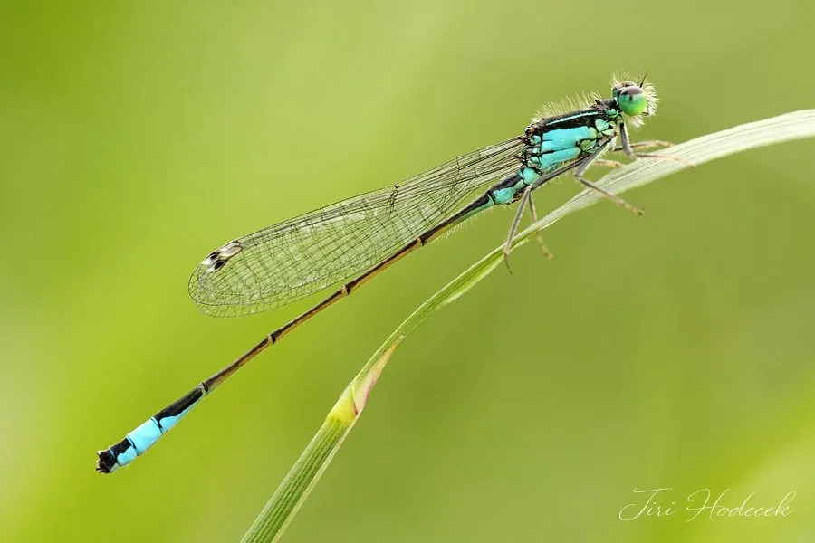

昆虫 · 动物界
长叶异痣蟌 Ischnura elegans

分布广泛的豆娘，雄虫腹部末端呈蓝色、胸部有黑色条纹，雌虫体色多变，常在水边草丛中活动觅食。
- 分类
- 门节肢动物门纲昆虫纲目蜻蜓目科蟌科属异痣蟌属
- 栖息环境
- 池塘、沟渠和河流缓流处，常在水边草丛中活动
- 地理分布
- 欧洲、亚洲和北非，中国多地有分布
- 保护级别
- 暂无评估
物种志
长叶异痣蟌成虫体长 30–35 mm，翅展 35–45 mm。雄虫胸部有黑色纵条纹，腹部末端呈亮蓝色；雌虫体色多变，有蓝色、绿色和黄褐色等不同色型。翅膀透明，停息时竖立在背上。
长叶异痣蟌分布于欧洲、亚洲和北非，中国多地有分布，栖息于池塘、沟渠和河流缓流处。成虫捕食小型昆虫，常在水边草丛中低飞；雌虫把卵产在水面植物组织中。稚虫水生，生活在浅水草丛里，捕食小型水生动物。它是分布最广的蟌类之一，对环境适应能力较强，在不同水体中都能见到。豆娘停息时翅膀竖立，蜻蜓停息时翅膀平展，这是区分它们最简单的方法。目前它没有IUCN 的正式评估，中国未将其列入国家重点保护野生动物名录。
形态与习性
- 食性成虫捕食小型昆虫，稚虫捕食水生小动物
- 体长30–35 mm，翅展 35–45 mm
- 雌雄差异雄虫腹端亮蓝色，雌虫有蓝、绿、黄褐等多种色型
- 栖息地池塘、沟渠和河流缓流处
- 繁殖雌虫把卵产在水面植物的组织中
- 稚虫水生，生活在浅水草丛里
趣味知识
- 长叶异痣蟌的雄虫腹部末端有一截亮蓝色，像点了一盏小灯。
- 雌虫有蓝、绿、黄褐等多种色型，外观差异很大。
- 豆娘停息时翅膀竖立，蜻蜓停息时翅膀平展。